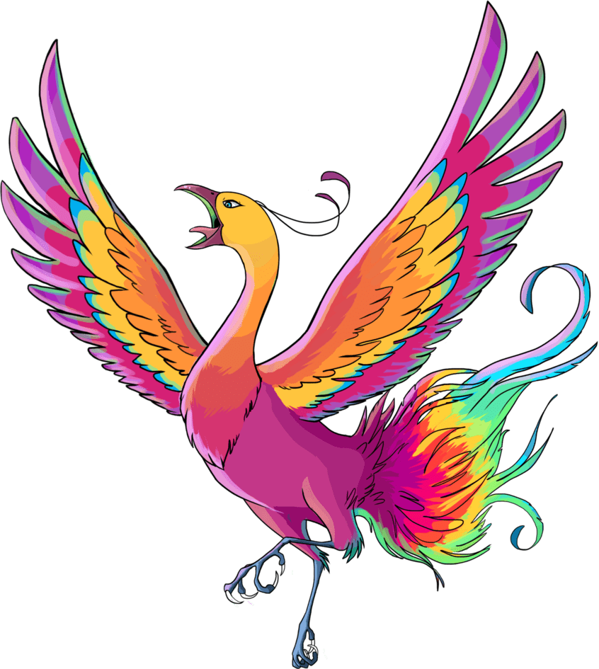
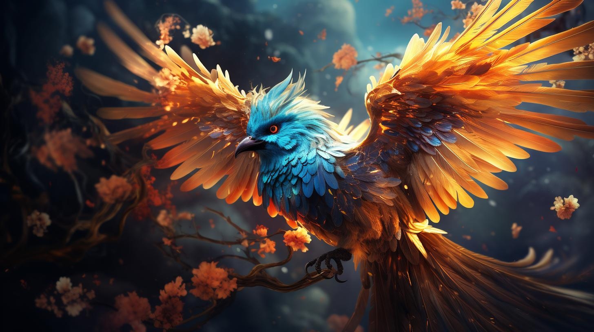
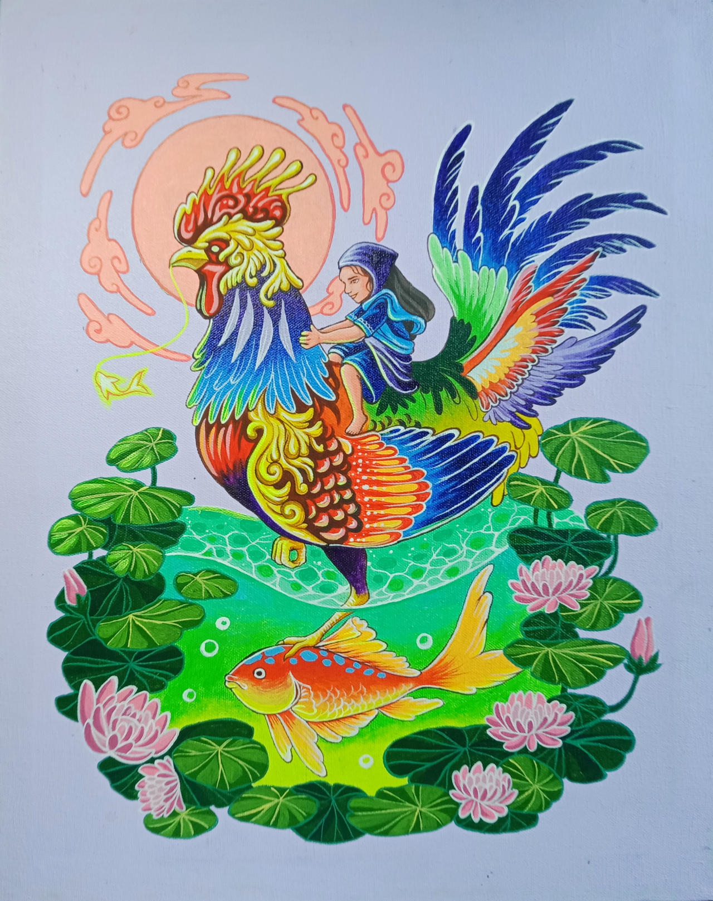
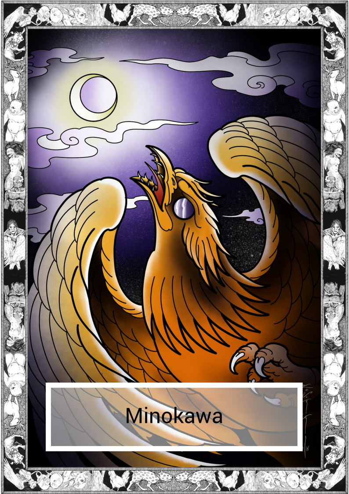

Mythical Animals in Philippine Mythology
Ibong Adarna

The Ibong Adarna is a mythical bird with enchanting plumage and a magical song that can heal or harm. Its melodious voice is said to put people to sleep and even cure ailments. The search for this elusive bird has inspired countless stories of adventure and bravery.
Ibong Amihan

Ibong Amihan is the legendary bird that played a crucial role in the creation story of Malakas and Maganda. This mythical bird broke the bamboo where the first man and woman, Malakas (Strong) and Maganda (Beautiful), emerged. It symbolizes the power of nature and new beginnings in Filipino mythology.
Sarimanok

The Sarimanok is a legendary bird of the Maranao people, often depicted as a colorful rooster or pheasant with elaborate plumage. It is considered a symbol of good fortune and is often featured in traditional Maranao art and textiles.
Bakunawa

The Bakunawa is a giant sea serpent or dragon that is said to have caused eclipses by attempting to swallow the moon. In some legends, the Bakunawa is depicted as having a fish-like body and the ability to control the tides and weather.
Minokawa

The Minokawa is a giant bird believed to reside in the sky. It is said to be so large that it can block out the sun or moon when it spreads its wings. Some stories describe the Minokawa as a dragon-like creature, adding to its fearsome reputation.